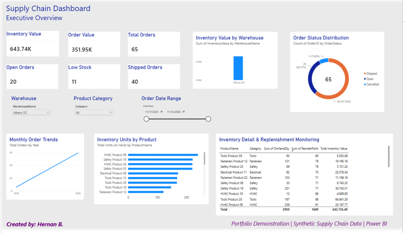
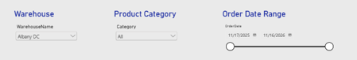

This project demonstrates how operational supply chain data can be transformed into an interactive Power BI dashboard for executive reporting and business analysis. The dashboard brings together inventory, order, warehouse, and shipment information to provide visibility into key operational measures.
The report includes KPI cards, interactive visualizations, a replenishment monitoring table, and slicers that allow users to explore the information by warehouse, product category, and order date.
Data: Synthetic supply chain data created for portfolio demonstration purposes.
The dashboard is designed to help business users answer questions such as:
The Power BI model uses seven tables organized into dimension and fact structures:
Relationships connect the operational fact tables to the relevant descriptive dimensions, supporting analysis across products, warehouses, customers, suppliers, and order activity.
The model uses active relationships with single-direction filtering to support consistent report interactions.
The report uses DAX measures to calculate key supply chain metrics dynamically in response to report filters.
| KPI / Measure | Business Purpose |
|---|---|
| Total Inventory Value | Monitor the value of inventory across the selected scope. |
| Total Order Value | Measure the monetary value of order activity. |
| Total Orders | Track the number of distinct orders. |
| Open Orders | Monitor orders with an Open status. |
| Shipped Orders | Track orders with a Shipped status. |
| Low Stock Products | Identify products with on-hand quantity below the reorder point. |
| Total Units on Hand | Monitor inventory quantities. |
| Total Shipped Units | Measure shipped quantity. |
The executive overview combines KPI cards and visualizations to provide a consolidated view of supply chain performance.

Report users can interact with the dashboard through slicers for:
These filters allow users to narrow the reporting context and explore the related KPIs and visualizations without changing the underlying report design.

The dashboard provides a starting point for reviewing inventory positions, monitoring order activity, comparing warehouse inventory, and identifying products that may require replenishment attention.
Technologies: Power BI Desktop, DAX, Data Modeling, KPI Reporting, Data Visualization.
Portfolio Demonstration: Synthetic Supply Chain Data